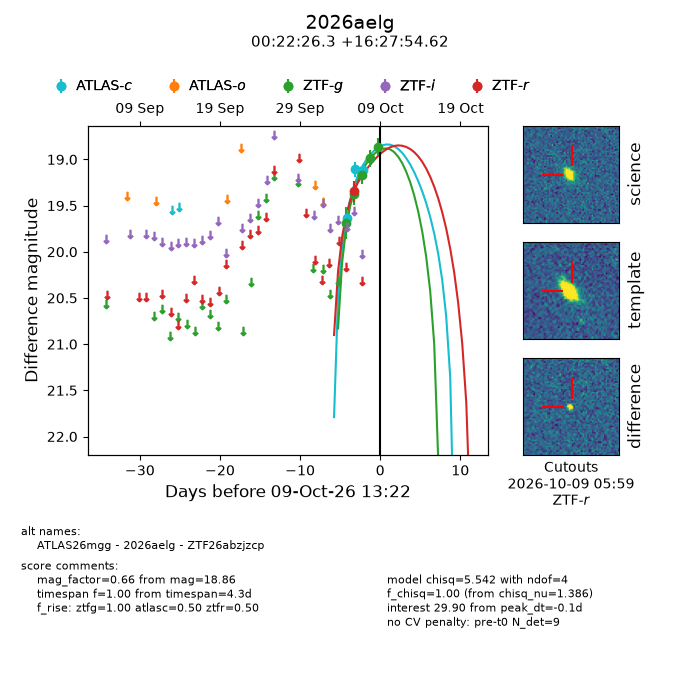
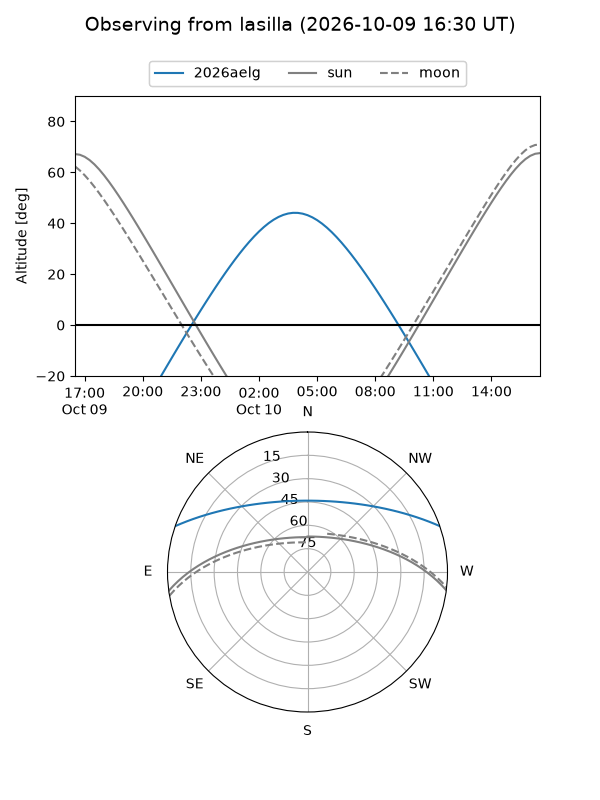
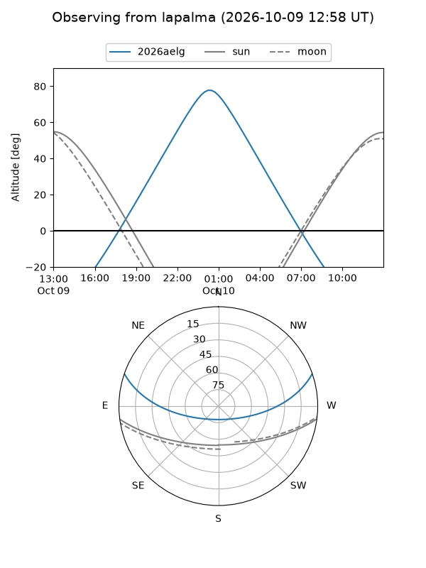
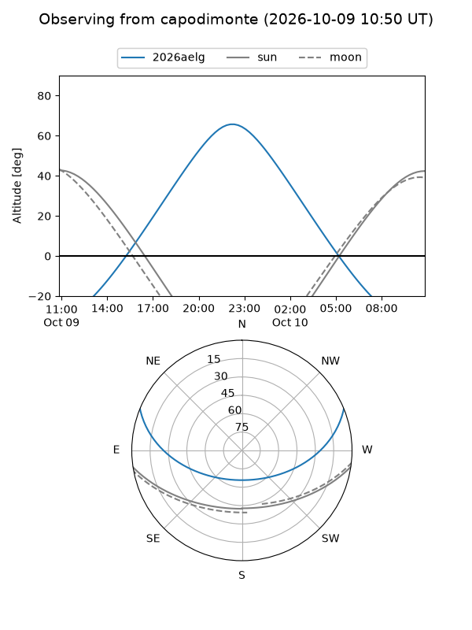
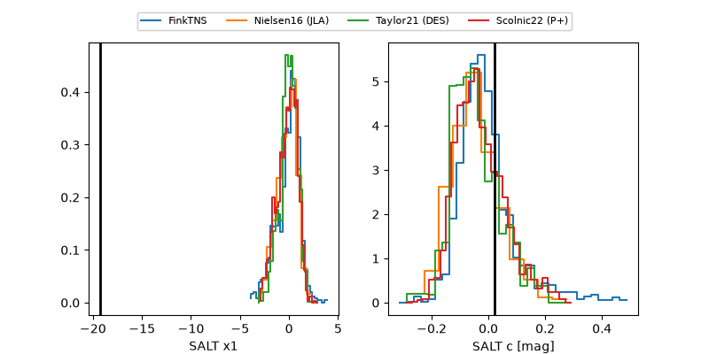

2026aelg
Target 2026aelg at 2026-10-09 13:25
Aliases and brokers:
FINK-ZTF: ztf.fink-portal.org/ZTF26abzjzcp
Lasair-ZTF: lasair-ztf.lsst.ac.uk/objects/ZTF26abzjzcp
ALeRCE-ZTF: alerce.online/object/ZTF26abzjzcp
YSE-PZ: ziggy.ucolick.org/yse/transient_detail/2026aelg
TNS name: wis-tns.org/object/2026aelg
Direct TNS query: direct search
alt names
ZTF26abzjzcp (ztf,fink_ztf)
2026aelg (tns,yse)
ATLAS26mgg (atlas)
Coordinates:
equatorial (ra, dec) = 5.6097,+16.46517
equatorial (HMS+DMS) = 00:22:26.32,+16:27:54.62
galactic (l, b) = (112.9276,-45.84251)
Flags:
peak dt: -0.1
Photometry:
last atlasc=19.11, ztfg=18.86, ztfr=19.34
3 atlasc, 5 ztfg, 1 ztfr detections
Lightcurve

Visibility



Additional plots
